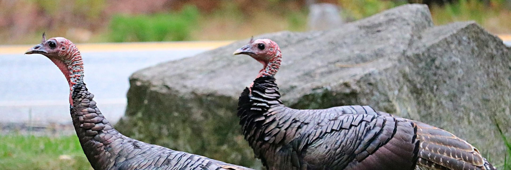

Promote the best of nature on your property while reducing the worst of it.

But, doesn't longer grass encourage ticks and mosquitoes? Well, the research says that it does not (cite). Ticks require moist, sheltered environments and animal hosts to survive and breed. Mosquitoes need standing water to reproduce. Neither ticks nor mosquitoes are much for travelling, so homeowners often unknowingly breed their own disease vectors in their own yards. HEcA experts design attractive yet inhospitable zones between core pest habitat and green infrastructure installations. We look for and eliminate potential sources of mosquito, tick, and rodent habitat. We can also advise clients on effective, ecological, and economical pest control approaches and in some cases refer to licensed specialists for more aggressive interventions. For more information, please see our ticks/mosquitoes pdf (link)
Clients will observe a reduction of disease vectors in a short amount of time. For quantification of benefits, baseline tick and mosquito counts can be established and changes monitored over time. Though not disease vectors, we can also check for and control nuissance species such as yellow jackets.